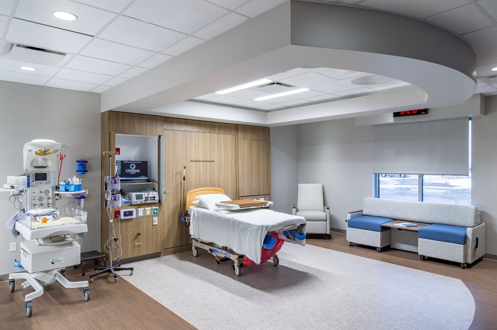
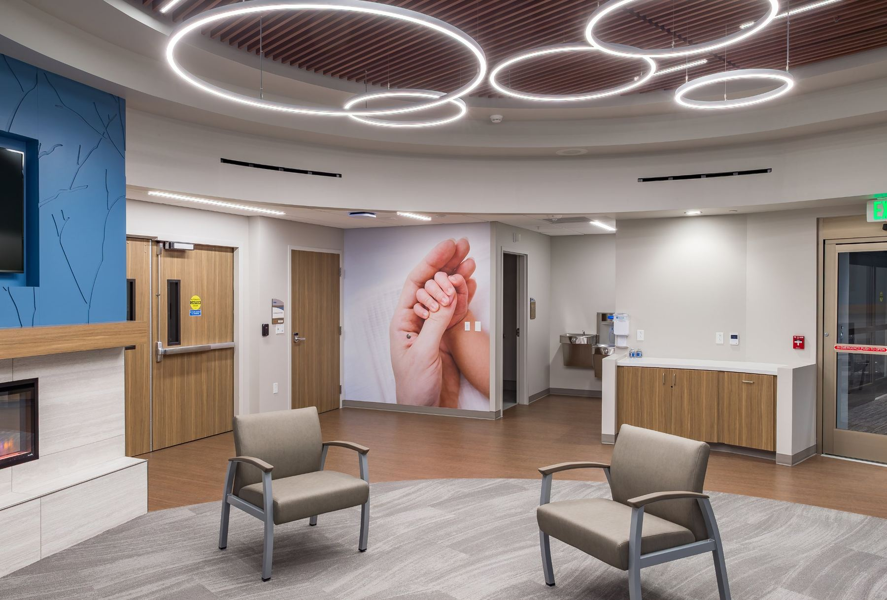
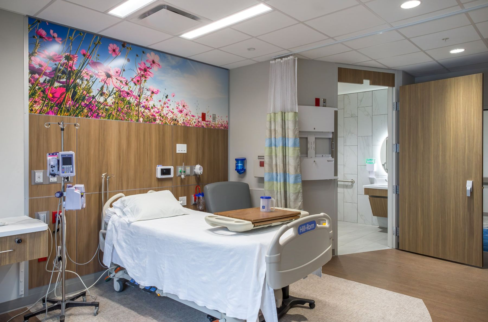

Obstetricia y Maternity Suites
Tenga a su bebé cerca de casa.
Desde su primera visita prenatal hasta el día que se lleva a su bebé a casa, su atención se queda en Colby, con proveedores y enfermeras que la conocen.
Para empezar su atención prenatal, llame a Family Center al (785) 462-6184
Si planea un embarazo
Prepare su cuerpo
La atención antes y durante el embarazo ayuda a prevenir complicaciones y a detectarlas a tiempo. Empiece estos pasos al menos tres meses antes de buscar el embarazo.
- Haga una cita para un examen antes del embarazo y hable con su proveedor sobre su historial médico familiar
- No fume ni tome alcohol
- Limite la cafeína
- Tome una vitamina prenatal con al menos 800 microgramos de ácido fólico
- Haga ejercicio con regularidad, antes y durante el embarazo
- Procure llegar a un peso saludable
- Coma al menos cinco porciones de frutas y verduras al día
- Vaya al dentista y use hilo dental
- Pregunte en su trabajo sobre permisos para citas y licencia de maternidad o paternidad
- Pregunte a su seguro qué cubre del embarazo, el parto y el cuidado del recién nacido
Su embarazo, paso a paso
Qué esperar con nosotros
Su primera visita
Las visitas suelen empezar después de su primera falta de menstruación o una prueba de embarazo positiva en casa.
- Una hora o más con una enfermera practicante, con examen físico y análisis de laboratorio
- Nuestras enfermeras hablan con usted sobre nutrición, ejercicio y un embarazo saludable
- Ultrasonido programado entre las semanas 9 y 12
- Nuestro equipo de servicios financieros se comunica con usted sobre los costos del parto y del recién nacido
Visitas prenatales
Su segunda visita incluye un examen físico, la revisión de sus análisis y una conversación sobre las pruebas prenatales que pueda necesitar. Después, la vemos cada mes.
Family Center for Health CarePreparación
En la semana 32 repasamos las señales del trabajo de parto y llenamos los papeles del parto. Desde la semana 36 hasta el parto, verá a su médico cada semana.
- Aprenda a usar el asiento de seguridad para el auto y la inspección requerida
- Pregunte a su proveedor cómo programar una visita a las Maternity Suites
Las Maternity Suites
Usted da a luz en Citizens Medical Center con un equipo que incluye a su proveedor, una enfermera para usted, una enfermera para su bebé y un terapeuta respiratorio.
Citizens Medical CenterMedicamentos durante el embarazo
Medicamentos sin receta que generalmente son seguros
Algunos medicamentos no son seguros durante el embarazo. Los siguientes generalmente se consideran seguros, pero consulte con su proveedor sobre su caso.
| Resfriado, sinusitis y alergias | Tylenol, Tylenol Cold, Tylenol Sinus, Benadryl, Sudafed, Sudafed Sinus, aerosol nasal Dristan, aerosol nasal Ocean |
|---|---|
| Dolor de garganta y tos | Chloraseptic en aerosol, pastillas Cepacol, pastillas para la tos (cualquier marca), Robitussin |
| Acidez y malestar estomacal | Tums, Mylanta, Riopan, Pepcid |
| Náuseas | Dramamine, Emetrol |
| Diarrea | Imodium AD |
| Estreñimiento | Colace, Milk of Magnesia, Metamucil |
| Hemorroides | Crema Anusol, Anusol HC .01% |
No tome
Advil, Aleve, aspirina, ibuprofeno, Motrin, Excedrin ni otros AINE (antiinflamatorios no esteroideos).
¿Tiene dudas sobre un medicamento? Llame a Family Center al (785) 462-6184.


Citizens Medical Center
The Maternity Suites
Nuestras nuevas Maternity Suites le dan espacio para el trabajo de parto, el parto y sus primeros días juntos, con lugar para la familia y una sala familiar en la unidad.
Su equipo para el parto
- Su proveedor médico
- Una enfermera para usted
- Una enfermera para su bebé
- Un terapeuta respiratorio
Comodidad durante el parto
Usted y su bebé se quedan hasta que los dos estén sanos y recuperándose bien. El tiempo depende del tipo de parto.
Le recomendamos tomar una clase de parto y practicar las técnicas de comodidad en casa con su acompañante antes del parto.
Cuando llegue el momento
Estaciónese bajo el toldo en la parte de atrás del hospital. Si necesita atención médica, llame antes para que una enfermera de obstetricia sepa que va en camino: (785) 462-7511.
Visite las Maternity Suites antes del parto para saber a dónde ir y qué esperar. Hable con su proveedor para programar la visita.
Proveedores de obstetricia
Proveedores que atienden partos
Nuestros médicos de familia la atienden durante el embarazo y el parto, y siguen cuidando a su familia después.
Lista para empacar
Qué traer al hospital
Traiga una identificación con foto y su tarjeta de seguro a cada visita.
Para usted
- Plan de parto
- Bata para el parto (podemos darle una)
- Ropa, calcetines y zapatos cómodos
- Bata y pantuflas
- Lentes, o lentes de contacto con estuche y solución
- Ligas para el cabello, bálsamo para labios, crema y artículos de aseo
- Teléfono y cargador
- Cámara o videocámara
- Libros, revistas, música o juegos para relajarse
Para su bebé
- Ropa para salir del hospital, con calcetines y un gorrito suave
- Una cobija de recibir
- Un asiento de seguridad para el auto bien instalado. La oficina del sheriff de su condado puede ayudarle a revisar la instalación.
- Un chupón, si lo desea. Le recomendamos esperar hasta que la lactancia esté bien establecida. Como hospital Baby-Friendly y High 5 for Mom & Baby, no damos chupones.
Deje en casa
- Joyas
- Mucho dinero en efectivo o tarjetas de crédito
- Objetos de valor sentimental o que no se puedan reemplazar
Llame a su proveedor de inmediato si nota
Si necesita atención médica, llame antes para que una enfermera de obstetricia sepa que va en camino.
Citizens Medical Center(785) 462-7511
- Hinchazón de la cara, los dedos o el cuerpo, o aumento de peso repentino
- Dolor de cabeza fuerte, visión borrosa o ver manchas
- Dolor abdominal o vómito que no se quita
- Escalofríos, fiebre o dolor al orinar
- Sangrado vaginal, flujo o salida de líquido
- Un cambio en cuánto se mueve su bebé
- Señales de parto prematuro: dolor sordo en la parte baja de la espalda, presión en la pelvis, diarrea, manchado o flujo acuoso
- Cualquier lesión accidental
Si su vida está en peligro, llame al 911.
El parto y después
Después del nacimiento de su bebé
Seguimos cuidando de usted y de su bebé durante la recuperación y las primeras semanas en casa. Llame a su proveedor si tiene preguntas o inquietudes.
Apoyo para la lactancia
La leche materna le da a su bebé un balance de nutrientes fácil de digerir, y los bebés amamantados tienen menos riesgo de enfermedades e infecciones. Citizens Health es un hospital con designación Baby-Friendly, el más alto estándar de apoyo a la lactancia, y tiene el reconocimiento High 5 for Mom & Baby por seguir cinco prácticas de lactancia basadas en evidencia.
Acerca de Baby-Friendly USA (en inglés)
Acerca de High 5 for Mom & Baby (en inglés)
Visitas de seguimiento
Su visita después del parto suele ser unas seis semanas después. Pregunte a su proveedor qué calendario es mejor para usted.
Programamos la primera cita de seguimiento de su bebé antes de que se vaya a casa.
Actas de nacimiento
Nuestro personal de obstetricia y de expedientes médicos le ayuda a llenar la información del acta de nacimiento de su bebé. La enviamos a la Oficina de Estadísticas Vitales del Departamento de Salud y Medio Ambiente de Kansas (KDHE).
Pida las copias certificadas directamente a la Oficina de Estadísticas Vitales.
Consejeras de lactancia certificadas
Nuestras consejeras de lactancia certificadas le ayudan a amamantar sin costo para usted. Pida una visita cuando quiera.
- Jenny Johnson(785) 462-6184
- Abby Barnett(785) 462-7511, ext. 300
- Kristy Kahle(785) 460-1276
- Phoebe Butts(785) 462-7511, ext. 300
- Randi Smith(785) 462-6184, ext. 722
- Jacquie Bartlett(785) 462-7511, ext. 300
- Kathleen Michaelis(785) 462-7511, ext. 300
Visitas a las Maternity Suites
Para familiares y amigos
Estas reglas protegen a las mamás y a los bebés mientras descansan y se recuperan.
- 10am a 8:30pm todos los díasLas visitas fuera de este horario dependen de la mamá.
- Hora de descanso, 2 a 3:30pmDurante este tiempo solo pueden visitar un acompañante y un hermanito del bebé.
- Después del partoEspere unas dos horas antes de visitar, a menos que la mamá pida otra cosa.
- NiñosLos hermanos del bebé son bienvenidos. Otros niños menores de 12 años no pueden visitar la unidad.
- Si está enfermoQuédese en casa. No se permite visitar a nadie con síntomas de enfermedad.
- Manos limpiasLávese las manos al entrar y al salir del cuarto, y cúbrase al toser o estornudar con el codo.
¿Lista para empezar su atención prenatal?
Llame a Family Center for Health Care para programar su primera visita. Si ya es paciente, también puede pedir una cita en MyChart.